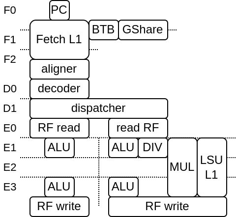

Introduction
About VexiiRiscv
VexiiRiscv is a from scratch second iteration of VexRiscv, with the following goals :
RISCV 32/64 bits IMAFDC
Could start around as small as VexRiscv, but could scale further in performance
Optional late-alu
Optional multi issue
Optional multi threading
Providing a cleaner implementation, getting ride of the technical debt, especially the frontend
Proper branch prediction
…
On this date (08/03/2024) the status is :
rv 32/64 imacsu supported
Can run baremetal benchmarks (2.50 dhrystone/mhz, 5.24 coremark/mhz)
single/dual issue supported
late-alu supported
BTB/RAS/GShare branch prediction supported
MMU SV32/SV39 supported
can run linux/buildroot in simulation
LSU store buffer supported
Here is a diagram with 2 issue / early+late alu / 6 stages configuration (note that the pipeline structure can vary a lot):
Check list
Here is a list of important assumptions and things to know about :
trap/flush/pc request from the pipeline, once asserted one cycle can not be undone. This also mean that while a given instruction is stuck somewere, if that instruction did raised on of those request, nothing should change the execution path. For instance, a sudden cache line refill completion should not lift the request from the LSU asking a redo (due to cache refill hazard).
In the execute pipeline, stage.up(RS1/RS2) is the value to be used, while stage.down(RS1/RS2) should not be used, as it implement the bypassing for the next stage
Fetch.ctrl(0) isn’t persistant.
About VexRiscv (not VexiiRiscv)
There is few reasons why VexiiRiscv exists instead of doing incremental upgrade on VexRiscv
Mostly, all the VexRiscv parts could be subject for upgrades
VexRiscv frontend / branch prediction is quite messy
The whole VexRiscv pipeline would have need a complete overhaul in oder to support multiple issue / late-alu
The VexRiscv plugin system has hits some limits
VexRiscv accumulated quite a bit of technical debt over time (2017)
The VexRiscv data cache being write though start to create issues the faster the frequency goes (DRAM can’t follow)
The VexRiscv verification infrastructure based on its own golden model isn’t great.
So, enough is enough, it was time to start fresh :D